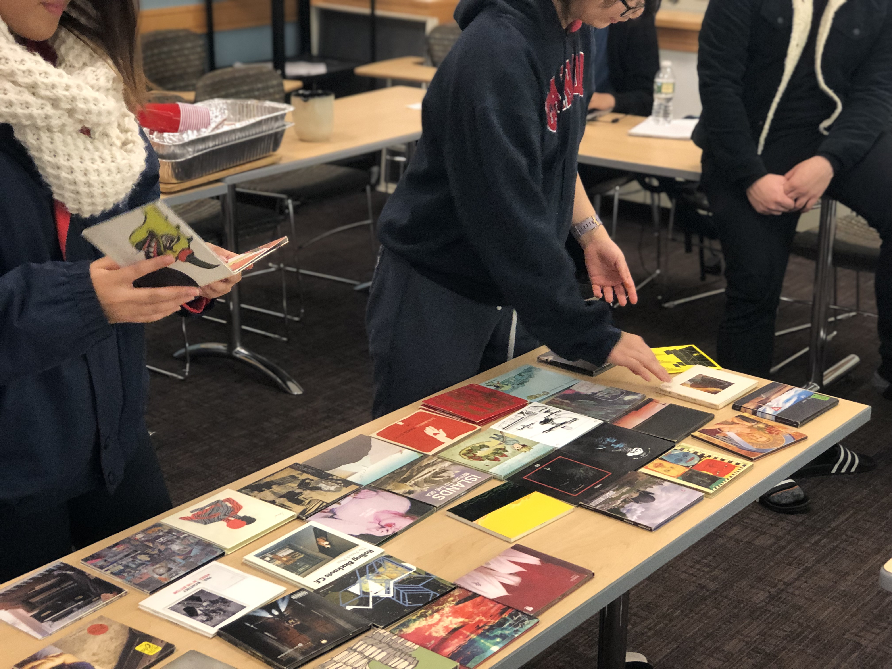
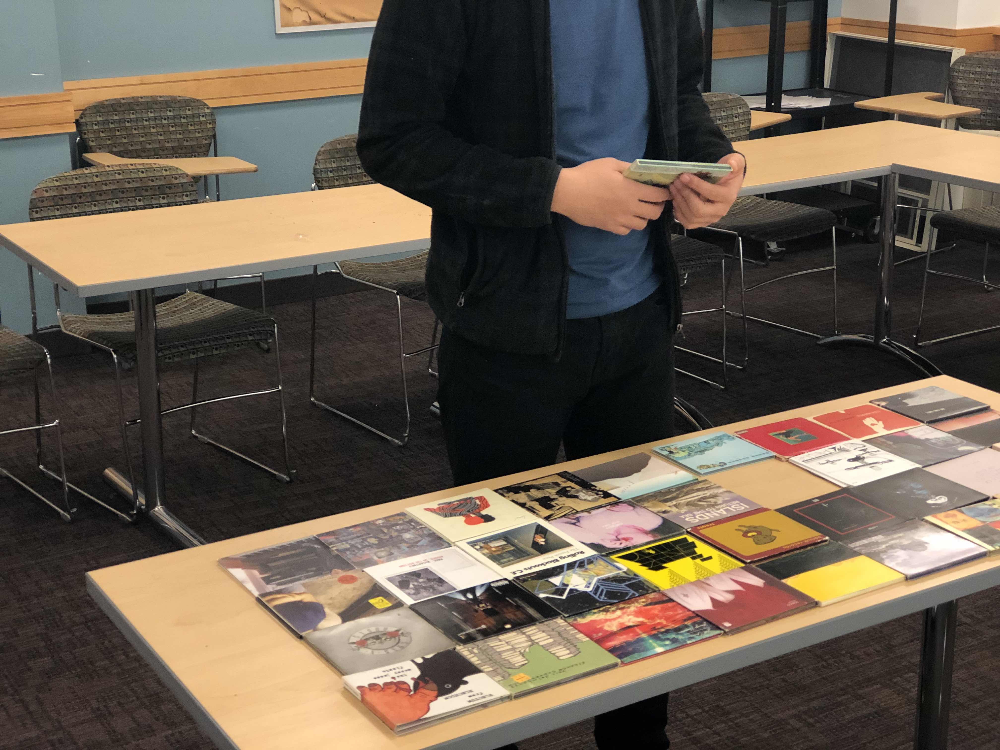
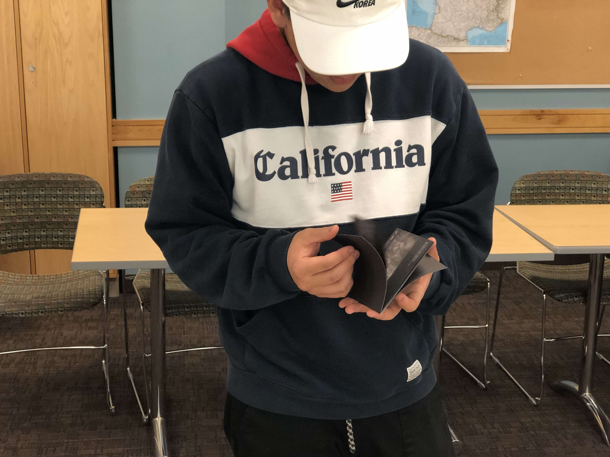

To interfere with the system of typical music consumption, I created an open space for people to discover new music with real albums.
My event was advertised to friends with this message:
STUDY BREAK | DISCOVER NEW MUSIC | OPEN DJ
NOVEMBER 18TH | 8:00PM - 11:00PM
The First Intervention.
12 people were involved in the first intervention.
I controlled the songs by playing them in the overhead speakers of a snell basement classroom through finding the album on spotify and streaming it.
Essentially, I "forced" listeners to take time to look and pick through albums and to be intentional in what they wanted to listen to.
From post-intervention conversations, I found that this lead to more in-depth analysis of music, deeper connections to the songs, and the participants were able to get more out of the entire listening experience.
The Second Intervention.
14 people were involved in the first intervention.
  Procedure
I first asked the participant to evaluate all of the albums layed out on the table. Judging on the cover art, tracklist, and band names, they were to choose at least one album to later listen through with me.
To explain, I often said, "If you were in a CD store, and these were the only albums on sale, which CD's would you want to take home to listen to," to prompt the participants.
Using a premade Spotify playlist with all of the albums that I physically had displayed, I would then play through the selected CD(s) with the participant. I allowed them to control the playback, but prohibited scrubbing through a song; only the skip, previous, play, and pause commands were allotted.
Reflection
To my surprise, the participants were extremely engaged, and most did come to the conclusion that holding the physical copy of an album had some benefitial affect. The space that I had created helped the participants to be analytical of what they were listening to, why they were listening to it, and helped expose what they enjoyed or disliked.
"But after seeing a cover, it just gives the album a kind of character, a personality. For example the Paul McCartney album, I probably wouldn’t have been as inclined to add it on spotify if it just appeared randomly on spotify. But since I saw the cover, I was like oh, I might add this."
It was not necessarily the process of holding and physically choosing something to listen to, that sparked participant's interests, but the space to listen to a selected piece with another person.
"...it feels more valuable after picking something to listen to this way."
The interviews on the documentation page expand on the responses from a majority of the participants.